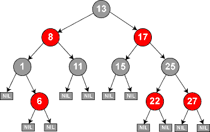

Trees II: red-black trees


"left" child branch, and less than that of all children in the "right" branch. Thus, it is possible to serialize a red-black tree by performing a depth-first, left-to-right traversal.Every node in a red-black tree is considered to be colored either red or black, with the root always being black. There is a somewhat complicated set of rules on how nodes should be colored, and, in particular, how the colors of the nodes should be used to make decisions on when and how to rebalance the tree. This article will not go into the details of the red-black tree mechanism, especially since that mechanism is well described by the Wikipedia red-black tree article (which is also the source of the image used here). Instead, we'll focus on how red-black trees are used in the Linux kernel.
The complex rules for red-black trees do bring some advantages. Since it is a binary tree, a red-black tree can perform lookups in logarithmic time. If the tree is properly maintained, the longest path to a leaf node in the tree will never be more than twice as long as the shortest path - in other words, the tree is always in approximate balance. But the property which is arguably most useful in the kernel context is the fact that insertions and deletions are (1) fast, and (2) provably bounded in time. All the work that the kernel developers have put into reducing latencies would be wasted if a data structure were to simply go off for an indeterminate period of time rebalancing itself. Users of red-black trees pay a small lookup cost because the tree is not perfectly balanced, but, in return, they get fast, bounded insertion and deletion operations. A red-black tree can, thus, be indicated in situations where nodes come and go frequently.
There are a number of red-black trees in use in the kernel. The anticipatory, deadline, and CFQ I/O schedulers all employ rbtrees to track requests; the packet CD/DVD driver does the same. The high-resolution timer code uses an rbtree to organize outstanding timer requests. The ext3 filesystem tracks directory entries in a red-black tree. Virtual memory areas (VMAs) are tracked with red-black trees, as are epoll file descriptors, cryptographic keys, and network packets in the "hierarchical token bucket" scheduler.
The process of using a red-black tree starts by including <linux/rbtree.h>. This is one of the trickier kernel data structures to use, however. When designing a general data structure for a language like C, the developer must always decide how to include arbitrary types within the structure, and how to make comparisons between them. The person who implemented Linux rbtrees (the copyright in the code is to Andrea Arcangeli) made these decisions:
- Structures which are to be part of an rbtree must include a struct
rb_node within them; there are no void * pointers
to separate objects. This is a common way of implementing kernel data
structures, and so will not surprise too many people.
- There is no "compare two objects" callback used in the rbtree code. Instead, users of rbtrees must, for all practical purposes, write the top-level search and insertion functions themselves, using lower-level rbtree primitives. As a result, using an rbtree is a bit more work, and the data structure is rather less opaque than our computer science teachers would have liked. What is gained in return, however, is a faster overall implementation without a bunch of indirect function calls in the hottest part of the tree traversal loops.
It should also be remembered that an rbtree, like many other kernel data structures, implements no locking of its own. Any code which uses an rbtree must implement its own mutual exclusion to keep the tree from being corrupted. Usually, that locking will fit well with the scheme already being used by that code anyway, so there is no need for an independent locking mechanism.
The root of a red-black tree has the type struct rb_root; a tree can be initialized to the empty state with a line like:
struct rb_root the_root = RB_ROOT;
Assume, for a moment, that we have a red-black tree which is already full of interesting data. Traversal of that tree (which does not involve searching) is straightforward:
struct rb_node *rb_first(struct rb_root *tree);
struct rb_node *rb_last(struct rb_root *tree);
struct rb_node *rb_next(struct rb_node *node);
struct rb_node *rb_prev(struct rb_node *node);
A call to rb_first() will return a pointer to the first entry in the tree, while rb_last() returns the final entry. Moving forward and backward through the tree is a simple matter of calling rb_next() and rb_prev(). In all of these cases, a return value of NULL indicates that the requested node does not exist.
Since the rb_node structures are embedded within some other structure of interest, finding the rb_node is a simple matter of using the right structure field. A call to one of the above functions will return a pointer to the embedded rb_node structure, however, and not the containing structure which is, normally, what the programmer really wants. This is the situation that the container_of() macro was created for, but, in this case, there is no need to use container_of() directly. Instead, use rb_entry():
rb_entry(pointer, type, member);
Where pointer is a pointer to an rb_node structure, type is the type of the containing structure, and member is the name of the rb_node structure within the container.
Searching an existing tree for a value is simply a matter of starting at the root, then, for each node, comparing the value of that node against the target and following the left or right branch as necessary. So all rbtree search code tends to look like the following:
struct my_stuff *my_rb_search(struct rb_root *root, int value)
{
struct rb_node *node = root->rb_node; /* top of the tree */
while (node)
{
struct my_stuff *stuff = rb_entry(node, struct my_stuff, node);
if (stuff->coolness > value)
node = node->rb_left;
else if (stuff->coolness < value)
node = node->rb_right;
else
return stuff; /* Found it */
}
return NULL;
}
Here, we are searching for a struct my_stuff whose coolness field matches the given value. An integer value is used for simplicity, but not all uses need be so simple. If the coolness of the root node is greater than the target value, then that value must be found in the left branch of the tree (if it is in the tree at all), so the search follows the rb_left branch and starts over. A search value greater than the current node's value indicates that the right branch should be used instead. Eventually this function will either find an exact match, or hit the bottom of the tree.
The insertion case is a little trickier. The code must traverse the tree until it finds the leaf node where the insertion should take place. Once it has found that spot, the new node is inserted as a "red" node, and the tree is rebalanced if need be. Insertion code tends to have this form:
void my_rb_insert(struct rb_root *root, struct my_stuff *new)
{
struct rb_node **link = &root->rb_node, *parent;
int value = new->coolness;
/* Go to the bottom of the tree */
while (*link)
{
parent = *link;
struct my_stuff *stuff = rb_entry(parent, struct my_stuff, parent);
if (stuff->coolness > value)
link = &(*link)->rb_left;
else
link = &(*link)->rb_right;
}
/* Put the new node there */
rb_link_node(new, parent, link);
rb_insert_color(new, root);
}
In this case, the traversal of the tree looks similar to the search case. However, the link pointer is doubly indirected; in the end, it will be used to tell the rbtree code which branch pointer (rb_left or rb_right) should be set to point to the new entry. The code follows the tree all the way to the bottom, at which point the parent pointer identifies the parent of the new node, and link points to the appropriate field within parent. Then, a call is made to:
void rb_link_node(struct rb_node *new_node,
struct rb_node *parent,
struct rb_node **link);
This call will link the new node into the tree as a red node. After this call, however, the tree may no longer meet all the requirements for a red-black tree, and may thus need to be rebalanced. That work is done by calling:
void rb_insert_color(struct rb_node *new_node, struct rb_root *tree);
Once that step is complete, the tree will be in consistent form.
There is an important assumption built into the above example: the new value being inserted into the tree is not already present there. If that assumption is not warranted, a corrupted tree could result. If the possibility of a duplicated insertion exists, the code must be careful to test for an exact match (as is done in the search case) and stop (without inserting the node) if that match is found.
Removal of a node from a tree is simpler; simply call:
void rb_erase(struct rb_node *victim, struct rb_root *tree);
After the call, victim will no longer be part of tree, which may have been rebalanced as part of the operation. If one tree entry is being replaced by another with the same value, however, there is no need to go through the removal and insertion process. Instead, use:
void rb_replace_node(struct rb_node *old,
struct rb_node *new,
struct rb_root *tree);
This call will quickly remove old from the tree, substituting
new in its place. If new does not have the same value as
old, however, the tree will be corrupted.
| Index entries for this article | |
|---|---|
| Kernel | Red-black trees |
Posted Jun 29, 2006 6:36 UTC (Thu)
by alonz (subscriber, #815)
[Link]
Posted Jun 29, 2006 8:41 UTC (Thu)
by opennw (guest, #29001)
[Link]
Posted Jun 29, 2006 9:04 UTC (Thu)
by ncm (guest, #165)
[Link] (4 responses)
Posted Jun 29, 2006 16:23 UTC (Thu)
by nix (subscriber, #2304)
[Link] (2 responses)
Posted Jun 29, 2006 17:21 UTC (Thu)
by cventers (guest, #31465)
[Link] (1 responses)
Posted Jun 30, 2006 15:56 UTC (Fri)
by nix (subscriber, #2304)
[Link]
Posted Jul 6, 2006 16:49 UTC (Thu)
by i3839 (guest, #31386)
[Link]
Posted Jun 29, 2006 11:58 UTC (Thu)
by smitty_one_each (subscriber, #28989)
[Link] (2 responses)
What is the effect of the comma? At first blush, we appear to be trying to assign two values to **link.
Posted Jun 29, 2006 17:16 UTC (Thu)
by ncm (guest, #165)
[Link] (1 responses)
Posted Apr 11, 2007 19:33 UTC (Wed)
by jengelh (subscriber, #33263)
[Link]
Posted Jul 3, 2006 8:41 UTC (Mon)
by wingo (guest, #26929)
[Link]
Posted May 30, 2008 6:20 UTC (Fri)
by bigt23 (guest, #52315)
[Link]
Posted Nov 7, 2009 23:55 UTC (Sat)
by acolin (subscriber, #61859)
[Link]
Note that in my_rb_insert parent must be initialized, otherwise it doesn't work. This can also be seen in example in rbtree.h. So,
Posted Oct 26, 2010 18:18 UTC (Tue)
by jlayton (subscriber, #31672)
[Link]
void rb_link_node(struct rb_node *new_node,
...which is all rb_node pointers (or pointers to pointers). But it declares this function:
void my_rb_insert(struct rb_root *root, struct my_stuff *new)
...which has "new" as a struct my_stuff pointer. That function then calls:
rb_link_node(new, parent, link);
...shouldn't "new" in latter two calls be a pointer to the embedded rb_node?
I believe there is a small error in the insertion code: the lineTrees II: red-black trees
struct my_stuff *stuff = rb_entry(parent, struct my_stuff, parent);
should have been written as
struct my_stuff *stuff = rb_entry(parent, struct my_stuff, node);
Wonderful article, thank you.
I think the "root-*gt;rb_node;" in my_rb_search() should be "root->rb_node". (I suspect the "*" should be a "&").
Trees II: red-black trees
The author/designer of Judy Trees remarks that, having measured them in comparison with other methods, "It is truly remarkable to me how much research has been done on binary trees and [that they are] still being taught." Red-black trees are quaint, at best, nowadays. Replacing them in the kernel with a more cache-aware (or, better, cache-oblivious) alternative ought to be an easy way to speed up affected kernel operations, except that it appears it would require rewriting zillions of search and insert functions. It seems unfortunate that the design of the kernel rbtrees is so intrusive, but there may have been no choice, in C.
Binary trees considered harmful
What a baroque and lovely data structure. Alas it seems it's tied up in software patents...Binary trees considered harmful
True, but so is RCU. I wonder if HP would give an explicit license to GPL Binary trees considered harmful
code (since they released the Judy library on Sourceforge as LGPL, along
with some "confidential" internal paper about Judy).
Yeah. It's a shame that the accessor macros and the code are so horribly named/unreadable. It's almost obfuscated-yet-heavily-commented...Binary trees considered harmful
Well, who knows, maybe it has something to do with this:
Binary trees considered harmful
$ size Judy-1.0.3/src/obj/.libs/libJudy.so.1.0.3
text data bss dec hex filename
114515 760 160 115435 1c2eb Judy-1.0.3/src/obj/.libs/libJudy.so.1.0.3
$ size linux/lib/*tree*.o
text data bss dec hex filename
1823 0 128 1951 79f linux/lib/prio_tree.o
2934 28 36 2998 bb6 linux/lib/radix-tree.o
1544 0 0 1544 608 linux/lib/rbtree.o
For something which is avoiding cache misses as much as possible it seems a bit strange to be so bloated that the code to avoid all those cache misses causes so awfully lot cache misses itself. Of course, this isn't something you'll see when benchmarking the code...
Furthermore, whatever memory saving might be achieved by using Judy arrays, it has a long to go way before it made up for that 100K extra usage.
And to rub it in, hashes are almost as good as Judy arrays but are much simpler and smaller to implement. Only icky thing is their (re-)size problem, but that's less icky than a 100K footprint. Good b-tree (not a binary tree) implementations are also not significant worse.
I'm not trying to prove that Judy arrays are bad, they have their usages, but I do think that the kernel isn't the right place for them.
>struct rb_node **link = &root->rb_node, *parent;Request clue-bat
No, it's just defining two variables, and leaving one uninitialized. In C++ code this would be bad form, but in C89 you have to define variables at the top of the block, often before you're ready to initialize them to anything useful. The kernel isn't coded in C89, though; it requires Gcc. With recent releases of Gcc, if run with C99 support turned on, variables can be defined in the middle of a block. It's really only inertia supporting this unfortunate practice.Request clue-bat
Bad form or not, it is also allowed in C++.Request clue-bat
Thanks, nice article.Trees II: red-black trees
Trees II: red-black trees
nice article! thanks!
Trees II: red-black trees
> struct rb_node **link = &root->rb_node, *parent;
should be
> struct rb_node **link = &root->rb_node, *parent = NULL;
Trees II: red-black trees
struct rb_node *parent,
struct rb_node **link);
rb_insert_color(new, root);